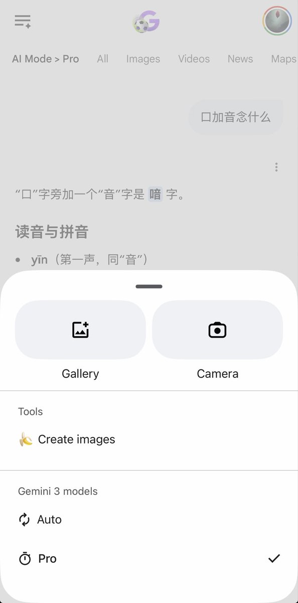
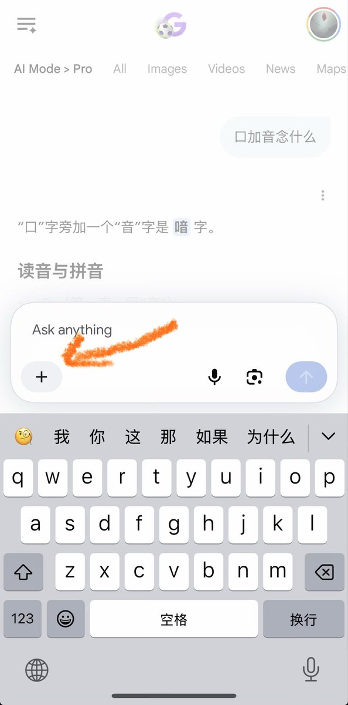

サイバー環状線
@CyberKanjousen
@Nova_Nightfall 很难想象谷歌模型调用工具到底是是不是人类开发的，调用个生图模型比自己画一张图还困难😓


Nova
@Nova_Nightfall
@CyberKanjousen 小提示：可以通过点➕把模型调整成 pro，之后就能答对了（当然模型模型答不对也是够离谱的，谷歌模型调用工具天天抽风） https://t.co/2opNpx3Qs7